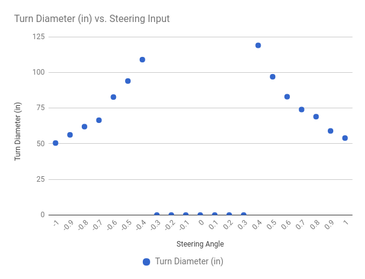

Calibrate your Car
The point of calibrating your car is to make it drive consistently.
How to adjust your car's settings
You will need to ssh into your Pi to do the calibration.
All of the car's default settings are in the config.py. You can override the default settings by editing the myconfig.py script in your car directory. This was generated when you ran the donkey createcar --path ~/mycar command. You can edit this file on your car by running:
nano ~/mycar/myconfig.py
Steering Calibration
Make sure your car is off the ground to prevent a runaway situation.
- Turn on your car.
- Find the servo cable on your car and see what channel it's plugged into the PCA board. It should be 1 or 0.
- Run
donkey calibrate --channel <your_steering_channel> --bus=1 - First find the value that turns the tires all the way to the left extreme. When calibrating steering you want to choose the value that just turns the wheels to the maximum; the wheels should turn all the way but the servo should NOT make a whining noise. Try the value
360and you should see the wheels on your car move slightly. If not try400or300. Next enter values +/- 10 from your starting value to find the PWM setting that makes your car turn all the way left, again making sure the motor is not making a whining sound. Remember this value. - Next find the value that turns the tires all the way to the right extreme. Enter values +/- 10 from your starting value to find the PWM setting that makes your car turn all the way right, again making sure the motor is not making a whining sound. Remember this value.
Edit the myconfig.py script on your car and enter these values as STEERING_LEFT_PWM and STEERING_RIGHT_PWM respectively.
STEERING_LEFT_PWM= PWM for full left turnSTEERING_RIGHT_PWM= PWM value for full right turn
Throttle Calibration
- Find the cable coming from your ESC and see what channel it goes into the PCA board. This is your throttle channel.
- run
donkey calibrate --channel <your_throttle_channel> --bus=1 - Enter
370when prompted for a PWM value. - You should hear your ESC beep indicating that it's calibrated.
- Enter
400and you should see your cars wheels start to go forward. If not, its likely that this is reverse, try entering330instead. - Keep trying different values until you've found a reasonable max speed and remember this PWM value.
Reverse on RC cars is a little tricky because the ESC must receive a reverse pulse, zero pulse, reverse pulse to start to go backwards. To calibrate a reverse PWM setting...
- Use the same technique as above set the PWM setting to your zero throttle.
- Enter the reverse value, then the zero throttle value, then the reverse value again.
- Enter values +/- 10 of the reverse value to find a reasonable reverse speed. Remember this reverse PWM value.
Now open your myconfig.py script and enter the PWM values for your car into the throttle_controller part:
THROTTLE_FORWARD_PWM= PWM value for full throttle forwardTHROTTLE_STOPPED_PWM= PWM value for zero throttleTHROTTLE_REVERSE_PWM= PWM value at full reverse throttle
Fine tuning your calibration
Note : optional

Now that you have your car roughly calibrated you can try driving it to verify that it drives as expected. Here's how to fine tune your car's calibration.
- Start your car by running
python manage.py drive. - Go to
<your_cars_hostname.local>:8887in a browser. - Press
juntil the cars steering is all the way right. - Press
ia couple times to get the car to go forward. - Measure the diameter of the turn and record it on a spreadsheet.
- Repeat this measurement for different steering values for turning each direction.
- Chart these so you can see if your car turns the same in each direction.
Corrections:
- If your car turns the same amount at an 80% turn and a 100% turn, change the PWM setting for that turn direction to be the PWM value at 80%.
- If your car is biased to turn one direction, change the PWM values of your turns in the opposite direction of the bias.
After you've fine tuned your car the steering chart should look something like this.
